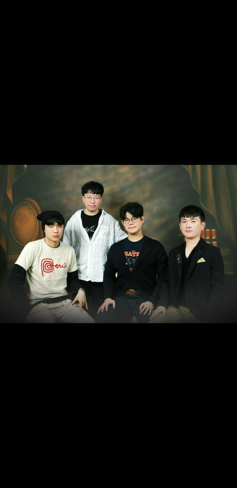

JJS
1. 김 재 순
2. 조 동 현
3. 한 승 주
JJSociety
2016년 9월 1일 서울(Seuol,South Korea)에서 우연히 만들어졌다.
매년 9월1일 창립일을 기념하기 위해 별도의 행사를 진행하지 않는다.
창립멤버로는 김재순, 신승준, 조동현, 한승주가 있다.
ÇEDA 정신을 추구한다.
çalışkan
Exelsior
Dinç
Absorption

단체사진- 가장 멋있는 옷을 입고, 가장 멋있는 포즈를 취했다.